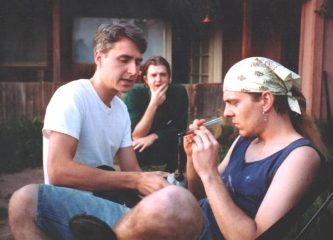
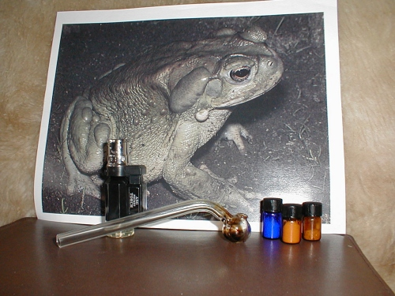
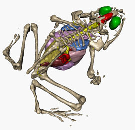

The Sonoran Desert
Toad
The Sonoran Desert
Toad
The Sonoran Desert
Toad
Bufo alvarius
"Of course the licking myth is newspaper hype -- it is the venom that is active, and it is smoked." - Shulgin

| now is the time past believing the child has relinquished the rein now is the test of the boomerang tossed in the night of redeeming - Robert Hunter
|
Neither the author nor publisher assume any liability for the application of the information contained in this Web site. It is presented solely for educational purposes and to serve as a record in the history of human experience.
Head shops sell glass pipes and small torches that work perfect for smoking toad venom. You want the free-base style of pipe, like a "crack" pipe. Regular pot or tobacco pipes or bongs will partially waste this valuable substance.
So, when you have the correct pipe, you will also need a very strong blue flame. Use a small torch or gas burner. A candle or cigarette lighter WILL NOT burn hot enough to be effective. You need instant combustion.
Realize that the torch flame never comes into direct contact with the toad venom. Direct contact with fire consumes a portion of the venom and turns it into ash. What a terrible waste! With the correct method, there is no waste.
Put the "proper dose" of venom in the pipe AND WITHOUT YET INHALING, apply a BLUE flame to the outside bottom of the pipe where the dose is located. The venom will soon melt and begin to vaporize when the torch flame is applied long enough. One will hear a VERY DISTINCT POPPING AND CRACKLING as this occurs. It is AT THIS POINT IN TIME that the active participant should begin to inhale the sacred essence of the toad venom. WHILE KEEPING THE FLAME DIRECTLY ON THE PIPE, one should inhale LONG and SLOW. Remember, strong heat is what sustains this chemical reaction, and the process of drawing air through the pipe quickens it. Obviously, the vapor should be held in the lungs for as long as is necessary to induce the experience. If vapor can be seen during the exhale, the participant has definitely ingested a sufficient dose and, without a doubt, is well on their way into the experience by this time.
Another smoking method involves using a modified light bulb. You
break the metal part off of the bulb using a tiny pin
hammer, a rock hammer, or something similar without shattering
the rest of the bulb. Then wash out the inside of the bulb. When you're ready, put the venom in
the bulb and heat the bottom with a blue flame, and inhale the smoke as it comes
out of the bottleneck of the bulb. Or, you can suck it out through
a straw. The idea is that you want to heat the venom with the flame, not
burn it like with pot. And honestly, the only way to smoke venom is to put a
big heaping dose in the pipe and just keep toking on this one big hit until
the effects come on. And you won't have any question about when you've reached
that
point - because if you do, then you didn't get enough toad smoke in your lungs.
Try it again.
Melting Points of Tryptamines - Here are the melting points of some free-bases:
| 5-MeO-DMT | 154° F (67.7° C) |
| bufotenine | 295° F (146.1° C) |
| DMT approx. | 116° F (46.6° C) |
Ott's experiments with isolated free-base bufotenine placed the
melting point at about 124-126° C. However he points out that others
have reported isoforms melting from [123-]124-126[-129]° C and 146-147[-150]° C from isolated material and
146-147° C and 138-140° C from synthetic material. This suggests that there are three isoforms, and the
melting point may vary depending on what one has on hand. Citing Shulgin & Shulgin 1997, Ott also mentions that
three distinct DMT isoforms with melting points ranging from 44-74° C have been reported (Ott 2001), and at
least two of these forms have been produced by the drug underground (Sand 2000). As well as different isoforms
creating different melting points, the method of
crystallization, purity, and several other factors can affect the melting point. 5-MeO-DMT has been listed as having
a melting point of 67.5-68.5° C (Ott 1996). It is also worth noting that different salts will have different
melting points.
All of which in no way negates the point that if one is vaporizing bufotenine, one is going to have to use more heat
than is needed for DMT or 5-MeO-DMT. It is worth pointing out though, that the melting point is not the final
temperature that one wants to reach when vaporizing the free-base, but rather it is the boiling point that is key;
this is the only temperature that changes a liquid into a gas, and it is sometimes twice as high as the
melting point - David Aardvark
From The Entheogen
Review, Vol. X, Number 4, Winter Solstice 2001, p.148.

> One other thing about the toad experience: Is the feeling that one is dying due to a real physiological action - increased heart rate, rapid rise in body temperature - or is that part of the Shamanic aspects of the experience?
Ah! That is part of the mystery! My guess is that the tryptamines open you up to the spirit = energetic worlds. This is a space that every Soul knows quite well but as humans we have mostly forgotten so that we can play the Earth game without too much interference or distraction. When your the brain is so overloaded with the 5-MeO-DMT, bufotenine, and everything else in the venom, the connection to the energetic realm is so immediate and so intense, that the only conclusion your physical body can render is that you've died and you're making your way out of this dimension. Fortunately, this is not the case! I have never heard of anyone dying from smoking toad venom - but it will certainly reveal areas of your life that you may want to put to rest!
From Terence McKenna in The Archaic Revival:
One of the interesting characteristics of DMT is that it sometimes inspires fear - this marks the experience as
existentially authentic. One of the interesting approaches to evaluating such a compound is to see how eager people
are to do it a second time. A touch of terror gives the stamp of validity to the experience because it means, "This
is real." We are in the balance. We read the literature, we know the maximum doses, the LD-50, and so on. But
nevertheless, so great is one's faith in the mind that when one is out in it one comes to feel that the rules of
pharmacology do not really apply and that control of existence on that plane is really a matter of focus of will and
good luck.
I'm not saying that there's something intrinsically good about terror. I'm saying that, granted the situation, if
one is not terrified then one must be somewhat out of contact with the full dynamics of what is happening. To not be
terrified means either that one is a fool or that one has taken a compound that paralyzes the ability to be
terrified. I have nothing against hedonism, and I certainly bring something out of it. But the experience must move
one's heart, and it will not move the heart unless it deals with the issues of life and death. If it deals with life
and death it will move one to fear, it will move one to tears, it will move one to laughter. These places are
profoundly strange and alien.

The Camden Centre Talk - England - 15/6/92
by Terence
McKenna
"Yes, well I see that the Guardian dutifully reported all one would need to know to get seriously involved in
toad abuse. In America we hear about toad licking and it's always advanced as a folkway of the primitive Australians
and we in America have gone on one better. First of all, we don't hurt our toads, we drive out into the desert in
our four-wheel-drive vehicles and we gently milk our toads onto what we call the windshield -- a windscreen -- and
then it dries in the sun and we get out our little frost scrapers and scrape this better-left-undescribed material
off the windshield and then this is smokable. This is 5-methoxy-DMT from Bufo Alvarius, and it passes all the tests.
Well, not the test as would occur in a plant, no, it occurs in an animal, that's better. It's interesting, it's one
of the few animal-based hallucinogens -- we call it toad foam, as opposed to more inelegant appellations that have
been used. It's 5-mythoxy-DMT, so it's a variety of dimethyltryptamine, but compared to DMT it's sort of like AM
radio versus 70 millimetre cinemascope. There's what I heard a researcher describe last week as an 'effulgent
emotion' -- yes, there certainly is. There's no word for this emotion, but it's very large, but there is very little
visual activity, kind of after-image-like stuff, but you know on DMT the hallucinations have an existential veracity
that's absolutely jaw-dropping."
(We sat with Terrance in Arizona and toad venom came up in the discussion. He certainly wasn't impressed with it.
When he smoked it, he was waiting for something really big to occur but that never
happened. We thought that perhaps he didn't take a large enough hit.
So apparently, he never really had THE toad experience. We miss you Terrance!)